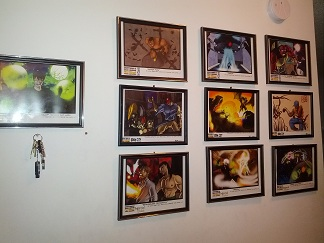

UX
UXM266
2012-11-19 15:03 UTC
#1
I love the art of Sentinels of the Multiverse.
I especially love the art prints (that are now on my wall). I'm just sad I missed out on the original 3 art prints from the first edition :(.
SO, I hope we do get the 150l needed so we can get more art prints!
How do you guys show off your stuff?

RE
Reckless
2012-11-19 20:37 UTC
#2
That is a beautiful display! My IR/EE prints are still safely tucked away in the folder they came in, in the box all of my swag came in. I need to make space on my walls! Does anyone know if there will be any way to get art prints from Rook City and before? It's killing me that I don't have those...
UX
UXM266
2012-11-19 20:53 UTC
#3
Thanks. I ahd a bare wall, and lots of prints. I quite like the one on the far left. That's my cameo appearence!